Herceg Novi je jedan od ljepših, ali i manje posjećenih gradova Jadrana - što ga čini savršenim odredištem za odmor bez gužve. Između Jadranskog mora i planine Orjen, ovaj grad nudi izuzetnu raznolikost: od 2.700-godišnje istorije i tvrđava do kristalno čiste Plave špilje i luksuznog Portonovi resorta. Ako se pitate šta videti i obići u Herceg Novom, evo 17 atrakcija i znamenitosti koje ne smijete propustiti.
Herceg Novi na prvi pogled
Herceg Novi je najzapadniji grad u Crnoj Gori, na samom ulazu u Bokokotorski zaliv, stisnut između mora i planine Orjen. Grad je poznat po 2.700 godina istorije, mimozi koja mu je simbol, i po tome što se cijeli spušta ka obali strmim kamenim stepenicama. Uz obalu se nižu 62 plaže - od gradskih do skrivenih uvala dostupnih samo brodom.
- Gdje se nalazi
- Ulaz u Bokokotorski zaliv, uz granicu s Hrvatskom, između Jadrana i planine Orjen.
- Klima
- Mediteranska - oko 240 sunčanih dana godišnje, blage zime (10-18 °C).
- More
- Ljeti 22-26 °C; u junu i septembru 22-25 °C uz znatno manje gužve.
- Igalo
- Banjski dio grada, 3 km od centra i 4 km od Starog grada - povezan šetalištem Pet Danica. Tu se nalaze i apartmani u Igalu te Blatna plaža s lekovitim blatom.
- Simbol grada
- Mimoza - u februaru joj je posvećen Praznik mimoze.
Kako doći do Herceg Novog
Herceg Novi je najlakše dostupan grad u Crnoj Gori ako dolazite sa zapada - do njega se stiže obalnom magistralom, bez skretanja u unutrašnjost.
- Aerodrom Dubrovnik (DBV)
- Oko 35 km, vožnja 45 minuta - najbliži aerodrom, zavisno od čekanja na granici.
- Aerodrom Tivat (TIV)
- Oko 40 minuta preko trajekta Kamenari-Lepetane; zaobilaznim putem oko zaliva vožnja je duža.
- Aerodrom Podgorica (TGD)
- Oko 90 km, vožnja približno 90 minuta.
- Autobusom
- Grad je na obalnoj liniji Herceg Novi-Kotor-Budva. Lokalna linija Herceg Novi-Igalo vozi svakih 15-20 minuta tokom dana.
- Iz Igala pješke
- Ravnim šetalištem Pet Danica uz more do centra je oko 45 minuta hoda - ili nekoliko minuta biciklom.
Vrijeme i najbolje vrijeme za posjetu
Zahvaljujući zaklonu planine Orjen i otvorenosti prema Jadranu, Herceg Novi ima jednu od najblažih klima na crnogorskoj obali - oko 240 sunčanih dana godišnje, a sezona kupanja traje duže nego u većini susjednih destinacija.
- Jun i septembar
- Najbolji balans - more 22-25 °C, dugi sunčani dani, znatno manje gužve i niže cijene smještaja nego u julu i avgustu.
- Jul i avgust
- Najtoplije i najživlje - more do 26 °C, ali i najveća gužva na plažama.
- April, maj i oktobar
- Idealno za razgledanje, planinarenje na Orjenu i obilazak tvrđava bez vrućine.
- Zima
- Blago, 10-18 °C i sunčano - grad ostaje aktivan, a februar donosi Praznik mimoze.
Ako planirate boravak, pogledajte i plaže u Herceg Novom i Igalu te gdje jesti u gradu.
Gradska luka - Škver
Škver je neformalni centar Herceg Novog i njegova žila kucavica. Zimi i ljeti ovdje sve vrvi od sugrađana, turista, ribara, skipera i djece. Na spoju glavnog gradskog stepeništa i Šetališta Pet Danica stoji Spomenik osnivača grada, bosanskog kralja Tvrtka I Kotromanića.
Tu je i otvoreni bazen vaterpolo kluba Jadran - klub koji je odavno postao suštinski element identiteta Herceg Novog. Bazen se, zahvaljujući blagoj klimi, može koristiti sedam do osam mjeseci godišnje. Ukratko: Škver je srce i duša grada - a krajem decembra centar iznad njega postaje pozornica za doček Nove godine u Herceg Novom, dok već sredinom februara grad preuzima Praznik mimoze - najveći zimski festival u Crnoj Gori.
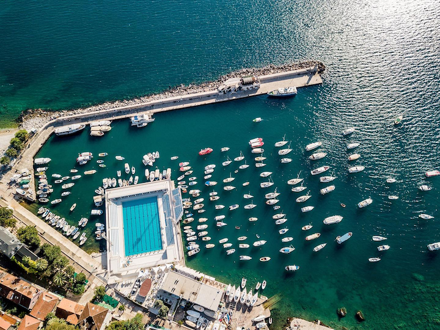
Portonovi Resort & Marina
Portonovi je priobalni luksuzni rizort pozicioniran na ulazu Bokokotorskog zaliva. Kućište prvog europskog One&Only hotela, s Espace Chenot Health Wellness Spa centrom, Portonovi postavlja novi standard blagostanja na Jadranu. Marina prima jahte do 130 m i nudi kompletnu nautičku uslugu.
Čak i ako ne odsjete, marina i šetalište su pristupačni za posjetioce - vrijedni su posjete samo zbog arhitekture i pogleda na zaliv.
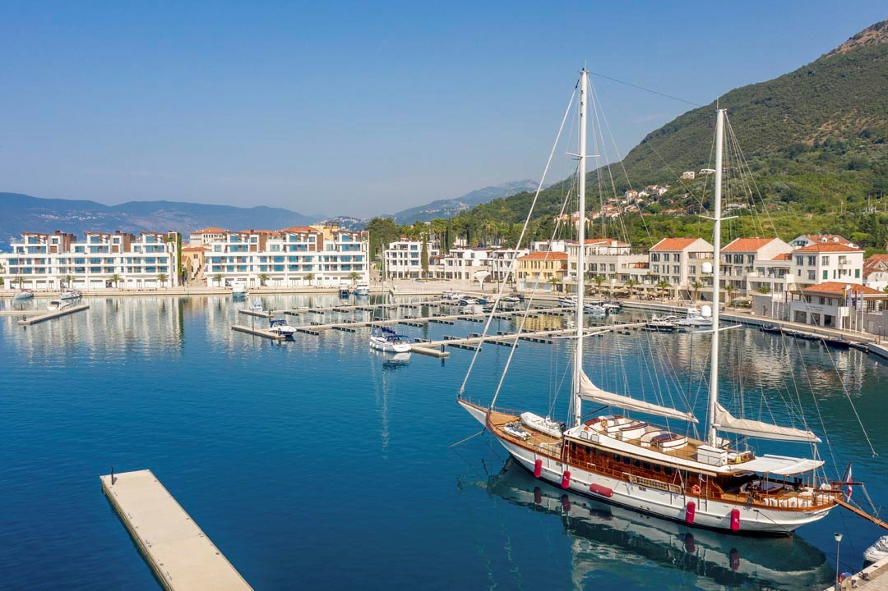
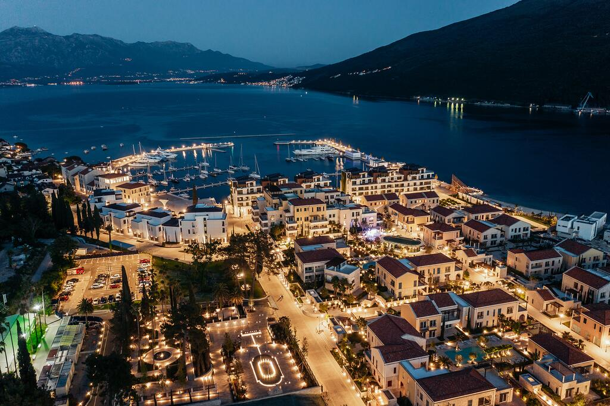
Gospa od Škrpjela
Jedno od najneobičnijih mjesta u cijelom Sredozemlju - ostrvo koje su stvorili sami ljudi, bacajući kamen u more kroz vjekove. Legenda kaže da su lokalni mornari, nakon pronalaska Madone ikone, zakleli se da će svaki put po povratku s mora baciti kamen. Vremenom se nagomilalo dovoljno kamenja da se stvori ostrvo, a na njemu je izgrađena prekrasna crkva.
Do ostrva se dolazi brodom iz Perasta (~40 minuta od Herceg Novog). Preporučujemo dolazak ujutro zbog gužve u ljetnjim popodnevima.
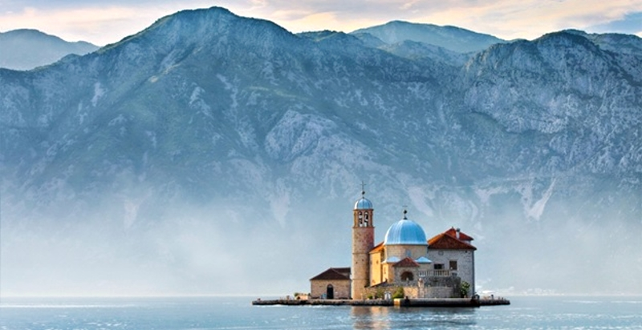
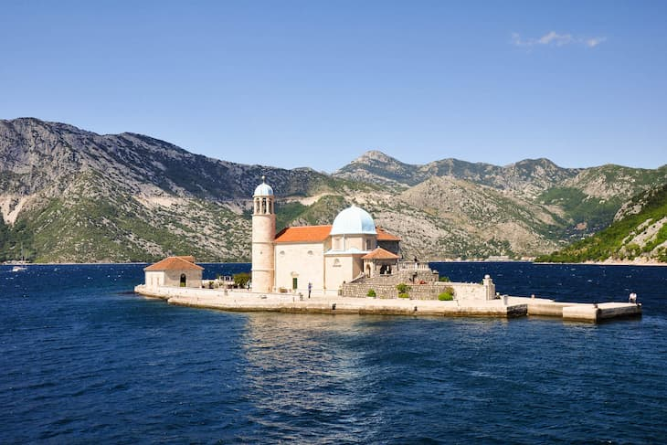
Poluostrvo Luštica
Luštica je predivno poluostrvo smješteno nasuprot Herceg Novog, s kristalno čistim morskim uvalama, maslinicima i skrivenim plažama. Možete istraživati pećine kajak turnom, voziti se ATV-ovima stjenovitim stazama, plivati u bistrim uvalama ili uživati u lokalnoj hrani na Morić farmi.
Do Luštica se dolazi automobilom ili brodom - brod je brži i preporučljiv. Na poluostrvu se nalaze i plaže Žanjice i Mirište, koje redovno osvajaju titulu najljepših plaža u Boki.
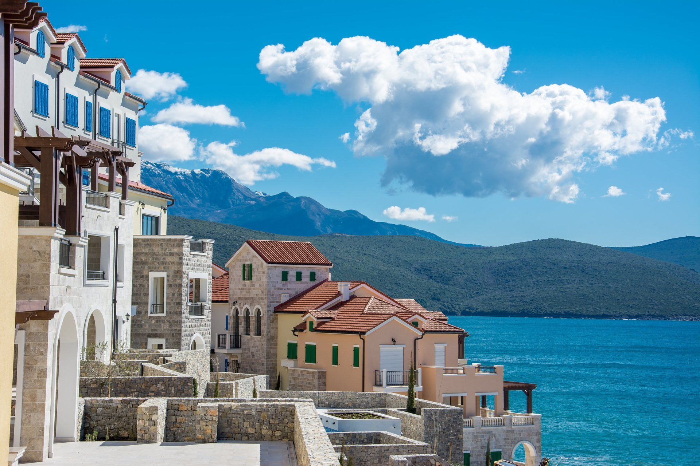
Planina Orjen
Herceg Novi se nalazi u podnožju planine Orjen - najvišeg priobalnog masiva na cijelom Jadranu (1.894 m). Montenegro Outdoor nudi planinarske ture do vrhova koji okružuju grad, za sve nivoe iskustva - od lakih šetnji do višednevnih traversi s noćenjem u planinskim kolibama.
Pogled sa vrha na Bokokotorski zaliv i Jadransko more je jedna od onih scena koje ostavljaju bez daha. Ljeti su temperature na vrhu ugodne čak i kad je u gradu 35 °C.
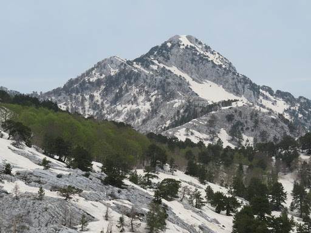
Forte Mare - Morska tvrđava
Forte Mare je morska tvrđava koja je vjekovima bila strateška odbrana obale Herceg Novog. Zidovi tvrđave spuštaju se direktno u more, a s vrha se pruža nevjerovatan pogled na Jadransko more i zaliv. Tvrđava se može zaobići izvana besplatno duž Šetališta Pet Danica.
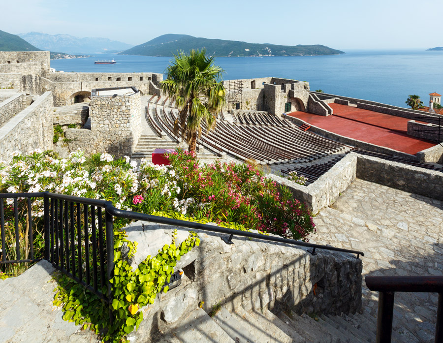
Kanli Kula tvrđava
Kanli Kula ("Krvavi toranj") je osmanlijaska tvrđava iz 16. vijeka - nekada zatvor za ratne zarobljenike. Posjetioci mogu sići u tamnice, a na vrhu kule prostire se otvoreni amfiteatar koji se koristi za filmske projekcije i pozorišne predstave pod zvijezdama tokom ljetnje sezone.
Ulaz košta oko 1 euro. Najbrže se dolazi sa strane Šetališta Pet Danica. Blizu tvrđave su gradska luka i otvoreni bazen.
Stari grad Herceg Novi
Stari grad je jedinstvena arhitektonska cjelina u samom srcu gradskog jezgra. Zidan je stepenasto s dva velika trga, ispresjecan uskim kaldrmanim ulicama i "novskim skalinama". Iza kamenih fasada kriju se vrtovi starih novskih porodica.
Ključne znamenitosti unutar zidina: Sat kula na Trgu Nikole Đurkovića, stepenište kralja Tvrtka, Trg Hercega Stefana Vukčića - Belavista, crkva Sv. Arhanđela Mihaila, Peraška vrata, tvrđave Forte Mare i Španjola. Tu su i Arhiv, Gradska biblioteka, Galerija Josip Bepo Benkovic i Galerija Sue Ryder.
Stari grad je savršen za šetnju u bilo koje doba dana, ali naročito u rano jutro ili kasno popodne kada su sjene duge i hladovine dobrodošle. Više o istoriji na Way to Montenegro ↗.

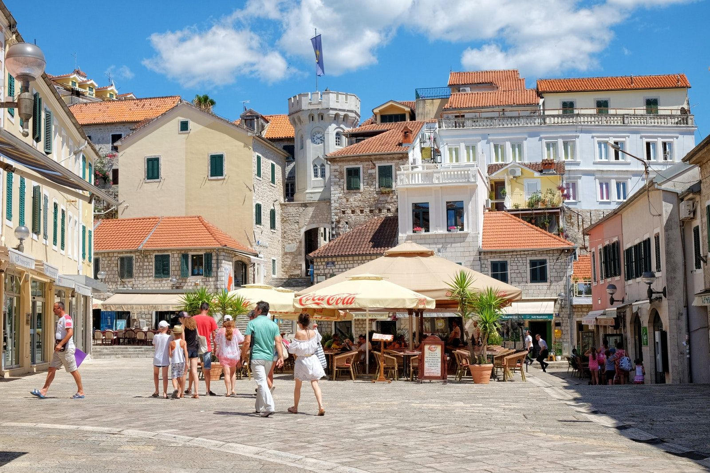
Šetalište Pet Danica
Šetalište Pet Danica proteže se 6 km duž crnogorske obale, od Igala do centra Herceg Novog. Nekada željeznička pruga popularnog voza "Ćiro", danas je najljepša pješačka promenada na crnogorskom primorju.
Duž šetališta nižu se pekare, kafići, mali restorani i suvenirnice. Posebno je preporučljivo za večernju šetnju - zalazak sunca nad Bokom je nezaboravan.
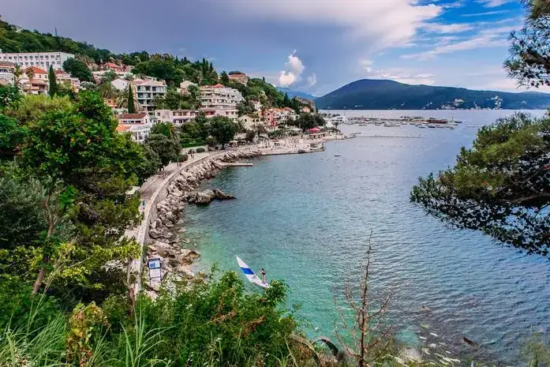
Plava Špilja
Plava špilja je jedna od najljepših prirodnih tvorevina u cijelom Sredozemlju. Tokom vedrog ljetnog dana, sunčevi zraci se odbijaju od površine mora i reflektuju u unutrašnjosti špilje, dajući vodi čudesnu nijansu kobaltno plave boje - po čemu je i dobila ime.
Pećina ima dva otvora, a nijanse boje mijenjaju se s dobom dana i godišnjim dobom. Rezonantnost špilje je izuzetna - i obični razgovor se pretvara u eho. Raniji naziv "Bondjorno kumpare" dali su je ribari koji su se sklanjali tu za nevremena.
Pristup je isključivo brodom - turistički brodovi polaze iz gradske luke Herceg Novog.

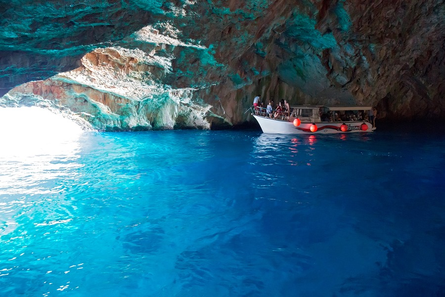
Rose - najstarija luka Boke
Na sjeverozapadnoj obali Luštica, nasuprot Herceg Novog, leži Rose - najstarija luka u Boki Kotorskoj i cijelom crnogorskom primorju. Nekada stara grčka naseobina Porto Rose, razrušena od Saracena u 9. vijeku. Uglavnom izgrađena u 17. i 18. vijeku, u zlatno doba bokeljskog moreplovstva.
Okružena čempresima, borovim, maslinicima i oleandrom, Rose je idealna za one koji traže autentičan primorski mir daleko od savremene obale. Forte Rose Resort nudi bungalove i apartmane s terasama direktno uz more, i od aerodroma Tivat udaljen je svega 20 km.
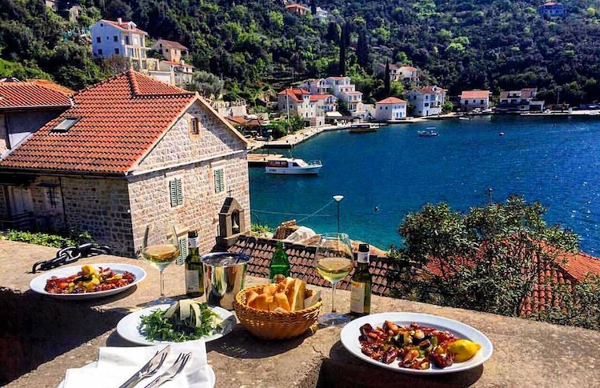
Perast
Perast je simpatičan stari grad u Bokokotorskom zalivu - idealan kao dnevni izlet iz Herceg Novog (~40 min vožnje). Pored fotogeničnih uličica i pastelnih fasada, Perast je dom ostrva Gospe od Škrpjela koje je opisano pod brojem 3.
Preporučujemo obilazak Perasta u kombinaciji s posjetom Kotoru - oba su na UNESCO-ovom listi i nalaze se u istoj obilasnici.
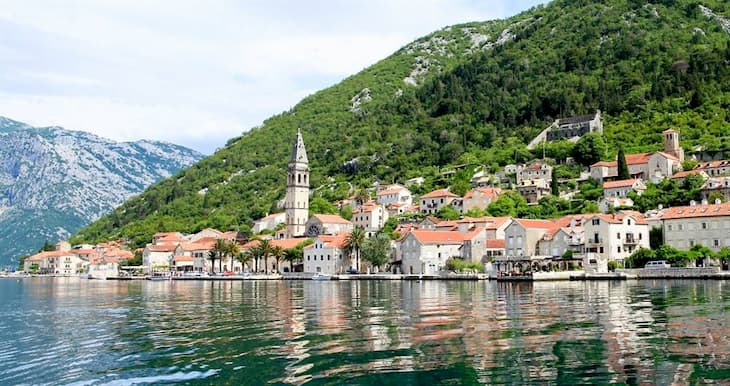
Preporučeni restorani u Herceg Novom
Kompletni vodič: Top 9 restorana u Herceg Novom i Igalu →
Ribarsko Selo
Smješteno na Luštica poluostrvu između plaža Mirište i Žanjice, Ribarsko Selo nudi svježu ribu donošenu svako jutro od lokalnih ribara - možete je odabrati direktno iz tacne na ledu. Organski uzgojene namirnice, pogled na uvalu i mogućnost pristajanja brodom.
Radi svaki dan 09:00-01:00.
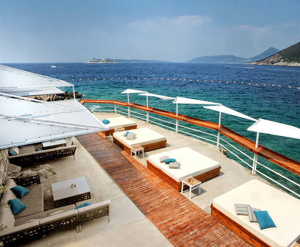
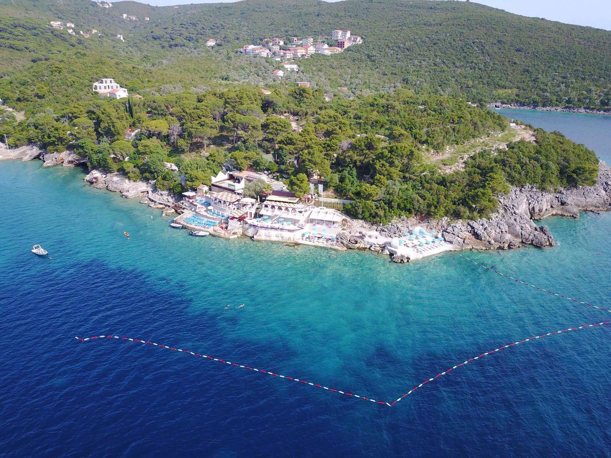
Verige 65
Verige 65 je elegantni stakleni restoran smješten u najužem dijelu Boke, s direktnim pogledom na prolaz krstareća, jahti i Perast. Fuzijska kuhinja (mediteranska, azijska, bliskoistočna). Savršen za romantičnu večeru ili posebnu prigodu.
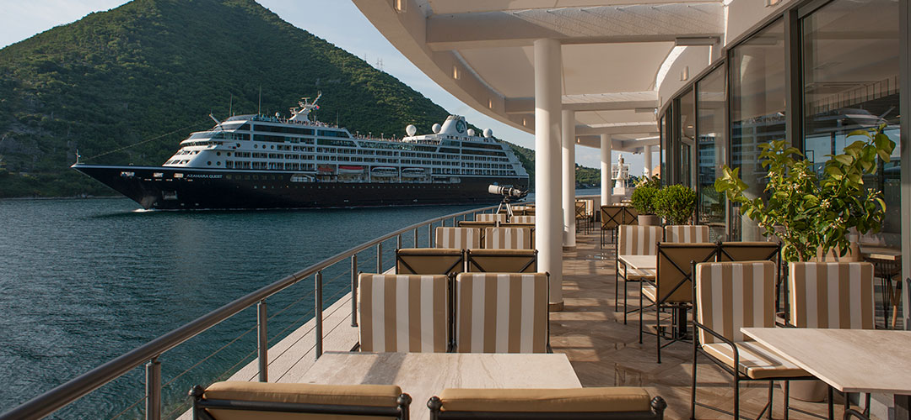
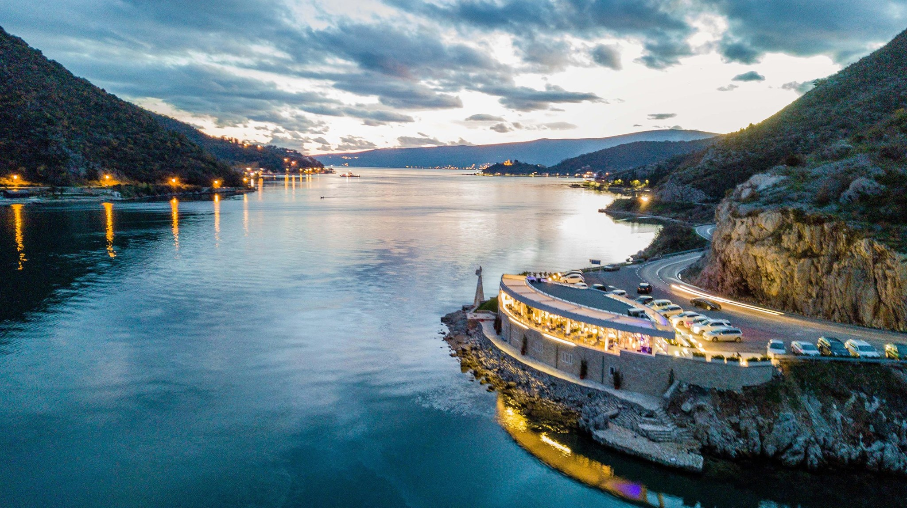
Gradska Kafana
Gradska kafana je preporučen restoran kraj obale Herceg Novog - tradicionalna crnogorska jela, italiana kuhinja i riblji specijaliteti. Meni za doručak, ručak i večeru s bogatim izborom vina.
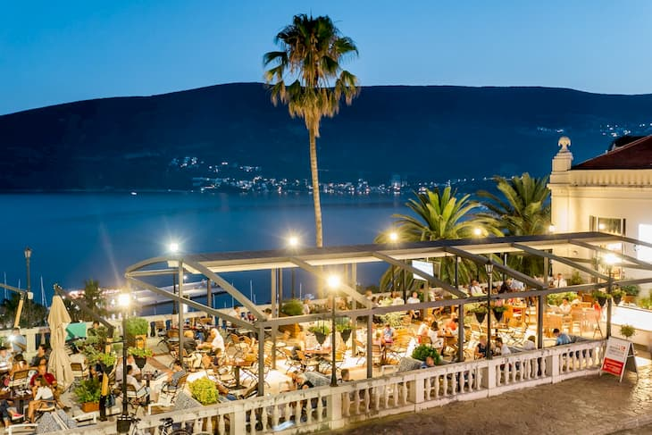
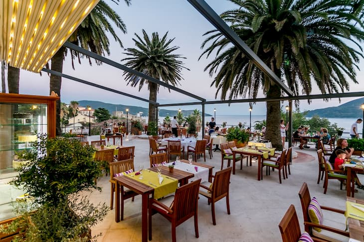
Restoran Kantula
Kantula se nalazi na popularnom šetalištu Pet Danica i nudi tradiconalnu crnogorsku kuhinju s bogatim izborom svježe ribe. Idealno za ručak u hladovini tokom šetnje promonadom.
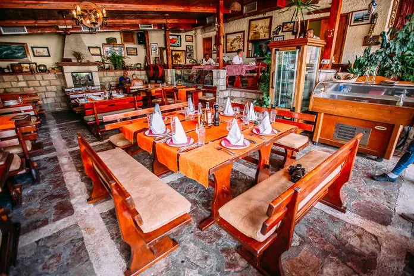
Admiral Cafe i Restoran
Admiral se nalazi direktno u luci Herceg Novog - svježi plodovi mora, nevjerovatan pogled na zaliv i brod koji dolaze i odlaze. Jedno od omiljenih mjesta lokalaca za kafu uz more u jutarnjim satima.
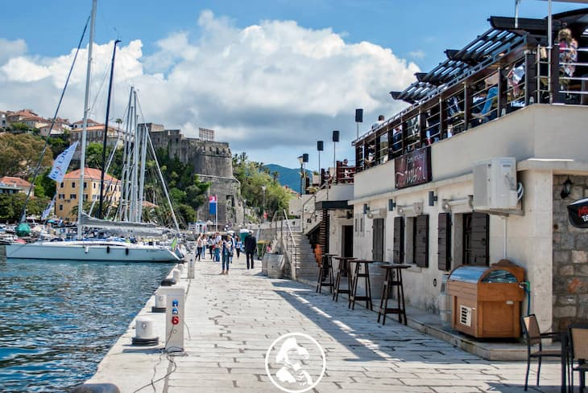
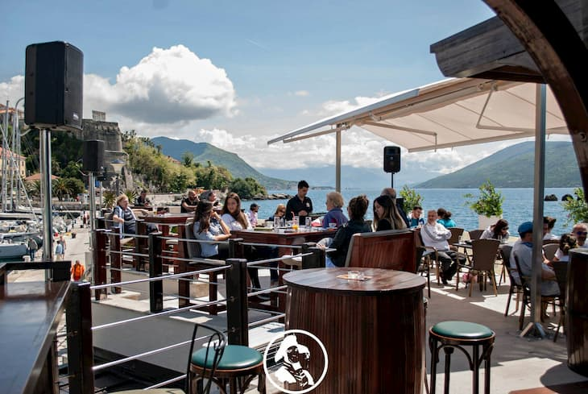